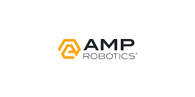

A startup is a company or project that is in the early stages of development. It is usually started by 1–3 founders who aim to capitalize on a perceived market demand by creating a viable product, service, or platform. The goal of a startup is to seek, develop, and validate a scalable business model. They thrive in environments of uncertainty, relying on quick decision-making and a strong vision to disrupt industries and bring groundbreaking ideas to life.
HandPrintHandprint is a Singapore-based greentech startup focused on empowering businesses and individuals to contribute to sustainability in a transparent and measurable way. Using technology like advanced verification systems and satellite imagery, Handprint allows users to track the real-world impact of their sustainability efforts. Handprint flips the narrative from focusing on reducing negative impacts (a “footprint”) to creating positive impacts, coining the term "handprint" as a symbol of regenerative contributions to the planet. Handprint’s innovative approach combines technology, transparency, and environmental stewardship, making it an excellent example of how startups are driving forward the sustainability agenda globally.You can find more about HandPrint here:| HandPrint | |
|
FuelGemsFuelGems is a Texas-based nanotechnology startup aiming to revolutionize the fuel industry with its innovative approach to sustainability. The company has developed patented fuel additives made from nanoparticles that reduce emissions and improve the performance of traditional fuels like gasoline, diesel and biofuels. FuelGems aims to bridge the gap between the traditional fossil fuel industry and the growing need for sustainable solutions. By offering an affordable and scalable way to reduce emissions, the company plays a critical role in the global transition toward greener energy practices.You can find more about FuelGems here:| FuelGames | |
|
|  | AMP RoboticsAMP Robotics is a Colorado-based startup at the forefront of transforming the recycling industry with its AI-powered technology. By combining artificial intelligence, robotics and machine learning, AMP Robotics is optimizing waste sorting processes to enhance material recovery, reduce landfill waste and increase recycling efficiency. By addressing inefficiencies in recycling, AMP Robotics plays a significant role in diverting waste from landfills, reducing greenhouse gas emissions, and promoting sustainable resource management. Their innovations directly contribute to improving recycling rates and closing the loop on material useYou can find more about AMP Robotics here:| AMP Robotics | |
HempitectureHempitecture is an Idaho-based startup that pioneers sustainable construction materials, focusing on hemp-based products to reduce the environmental impact of the building industry. By leveraging hemp’s natural properties, Hempitecture creates innovative, eco-friendly materials that align with modern sustainability goals. Hempitecture envisions a future where construction materials are not just sustainable but regenerative, contributing positively to the environment while meeting modern building standards. Hempitecture’s innovative approach demonstrates how startups can use renewable resources like hemp to revolutionize traditional industries and support a sustainable future.You can find more about Hempitecture here:| Hempitecture | |